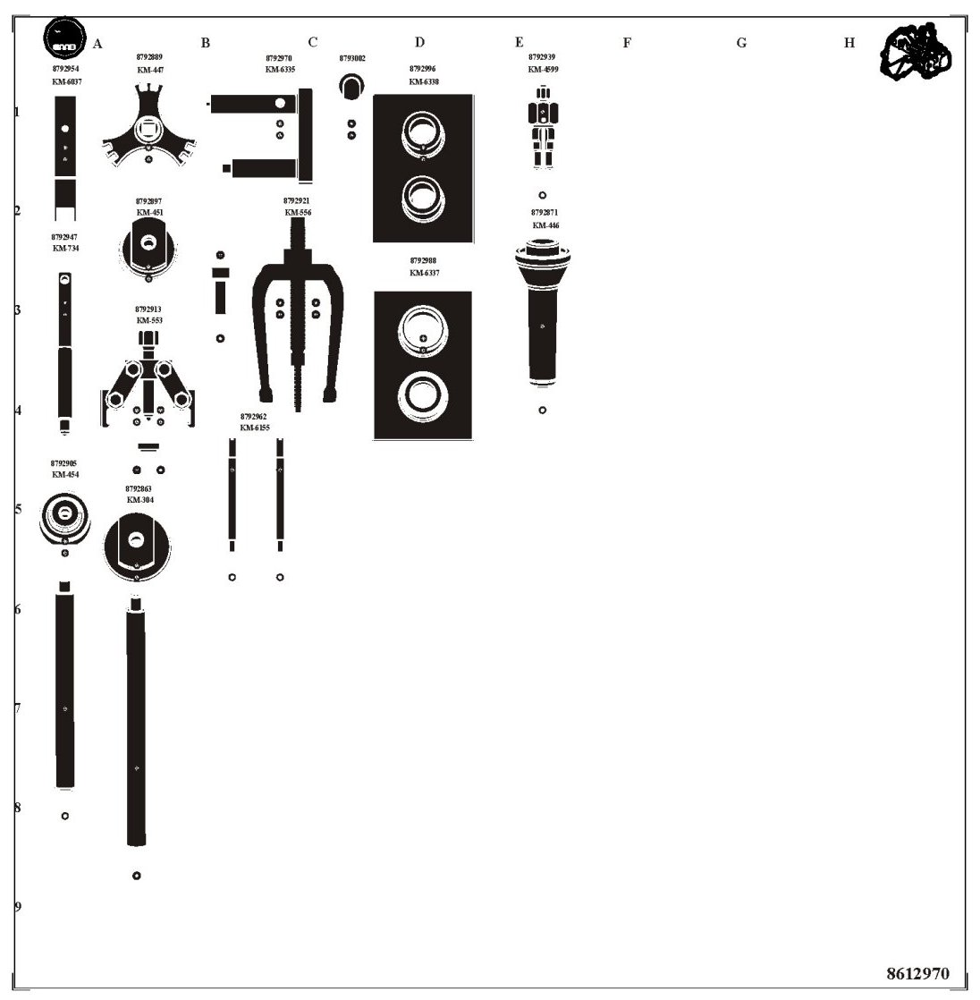

86 12 970 Toolboard T10, F17 Manual Gearbox
86 12 970 Toolboard T10, F17 Manual Gearbox

Group: General
Tools on the full-size toolboard (86 12 970)
8792863 (KM-304) 8792871 (KM-446) 8792897 (KM-451)
8792988 (KM-6337) 8792889 (KM-447) 8792905 (KM-454-B)
8792913 (KM-553-A) 8792921 (KM-556-A) 8792939 (KM-599)
8792947 (KM-734) 8792954 (KM-6037) 8792962 (KM-6155)
8792970 (KM-6335) 8792996 (KM-6338) 8793002
32025026 (DT 46757) 32025027 (DT 46760) 32025028 (DT 46754)
32025029 (KM-523-1) 32025030 (DT 46756) 32025031 (DT 46773)